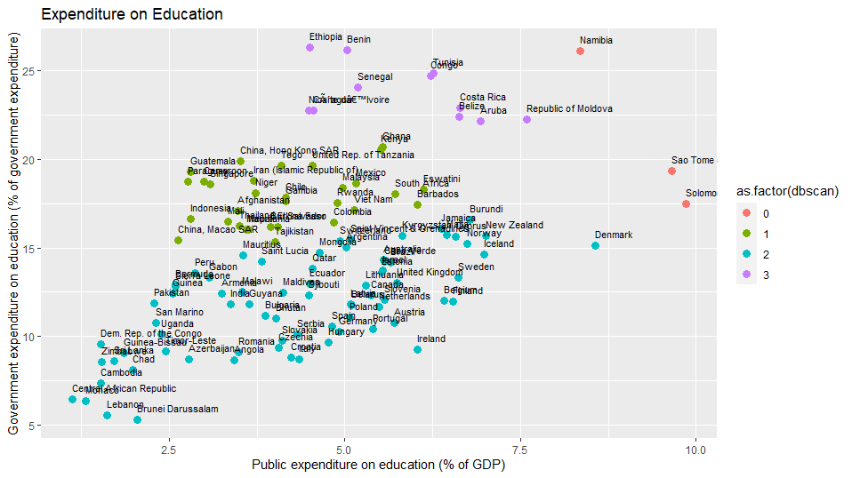

How to classify education expenditure by country using clusters?
PT: Cluster é uma técnica estatística não supervisionada de aglomeração ou agrupamento de elementos ou indíviduos dado suas características e semelhanças. Este agrupamento deve-se a distãncia euclidiana entre os indivíduos e pode ser classificada em Hierarquica e não Hierarquica.
Neste post vamos demonstrar como utilizar o R para faze-lo, utilizando uma base de dados e 3 técnicas diferentes. Vamos falar da base primeiro.
EN: Cluster is an unsupervised statistical technique of grouping of elements or individuals considering their characteristics and similarities. This classification is due to the Euclidean distance between those individuals and can be defined into Hierarchical and non-Hierarchical.
In this post we will demonstrate how to use R to do it, using a public dataset and 3 different techniques.Let´s talk about the database first.
01 - The DATA - UN data - Public expenditure on education
PT: As Nações Unidas publicamente proporciona dados de diversos países e de sobre diversos temas em seu website .Dados populacionais, educacionais, financeiros , trabalhistas, criminais e diversos outros são acessíveis. Para este exercício, vamos utilizar os dados de Gastos por países para classificar países com o mesmo comportamento.
O Carregamento e tratamento da base de dados pode ser encontrado abaixo:
EN: The United Nations publicly provides data from different countries and diverse topics in its website .Population, educational, financial, labor, criminal and many other data are accessible. For this exercise, we will use data from Public expenditure on education to classify countries with same characteristic.
The load and treatment of the dataset can be found below:
###Importando o CSV/Importing the CSV
data <- read.table("http://data.un.org/_Docs/SYB/CSV/SYB63_245_202009_Public%20Expenditure%20on%20Education.csv" ,skip=1 ,sep = ",", header = T, dec = ".")
###Tratando e filtrando 2010 apenas / Treatment and filtering 2010 only
data_f <- filter(data,Year==2010 & (Series == "Public expenditure on education (% of GDP)" | Series =="Government expenditure on education (% of government expenditure)")) %>%
select(X, Value, Series)
data_t <- spread(data_f,Series,Value)
rownames(data_t) <- data_t[,1]
data_t <- data_t[,-1]
data_fim <- filter(data_t,`Public expenditure on education (% of GDP)`>=0 & `Government expenditure on education (% of government expenditure)` >=0) PT: Se plotarmos os dados em um gráfico podemos ver os países bem espalhados pelo mapa. Nosso objetivo com este tópico é classificarlos de acordo com suas características.
EN: If we plot the data on a graph we can see the countries spread out across the map. Our goal with this topic is to classify them according to their characteristics.
PT: Agora para os próximos tópicos vamos utilizar o R e as seguintes libraries para gerar os cluster: tidyverse, cluster, dendextend, factoextra, fpc and readxl.
EN: Now for the next topics we will use R and the following libraries to generate the clusters: tidyverse, cluster, dendextend, factoextra, fpc and readxl.
02 - Hierarchical cluster/ Cluster Hierarquico
PT: O modelo de cluster hierarquico é um método no qual dois indíviduos com a menor distância euclidiana são agrupados, formando um grupo (ou um individuo) e assim o processo e repetido até todos os individuos serem agrupados em uma população. Também podemos partir a População total e separararmos em grupos menores, mas de qualquer maneira formando uma hierarquia de grupos nos quais a variabilidade entre os grupos aumenta ou diminui. Você pode encontrar mais informações sobre Cluster Hierarquicos aqui .
Existem diversos métodos de sequenciar os grupos hierarquicos, sendo conservativos ou agressivos, definindo no processo de linkage criteria. Para este exemplo, vamos usar o método “single linkage”, no qual utilizamos a menor distancia de todos individuos de um grupo para encontrar um próximo grupo/individuo.
EN: The hierarchical cluster model is a method in which two individuals with the smallest Euclidean distance are grouped, forming a group (or an individual) and so the process is repeated until all individuals are grouped into a population. We can also break up the total population and break it up into smaller groups, but anyway forming a hierarchy of groups in which the variability between groups increases or decreases. You can find more information about Hierarchical Clusters here .
There are several methods of sequencing the hierarchical groups, being conservative or aggressive, defining in the process of linkage criteria. For this example, we are going to use the “single linkage” method, in which we use the shortest distance of all individuals in a group to find a next group/individual.
PT: Você pode visualizar o modelo hierarquico de nossa base de dados no dendograma abaixo:
EN: You can view the hierarchical model of our database in the dendrogram below:
Dendogram
###Euclidian distance / Distancias euclidiana
distancia <- dist(data_fim, method = "euclidean")
###Cluster
cluster.hierarquico <- hclust(distancia, method = "single" )
###Dendogram / Dendrograma
plot(cluster.hierarquico, cex = 0.6, hang = -1)
###Creating Groups / criando grupos
table_dist <- cutree(cluster.hierarquico, k = 5)
###transformando em data frame a saida do cluster
table_dist <- data.frame(table_dist)
###Adding to original dataset / juntando com a base original
data_fim <- cbind(data_fim, table_dist)
PT: No código acima foi utilizado 5 cluster para serem criados. Infelizmente modelos hierarquicos não performam bem quando temos um grande número de indivíduos, como você pode visualizar abaixo:
EN: In the code above, 5 clusters were used to be created. Unfortunately hierarchical models doesnt have a good performance when we have a large number of individuals, as you can see below:

Cluster Hierachy
03 - Clustering with k-Means method / método
PT: O método K-means de clusterização é um método não-hierarquico que utiliza centroides para particionar a população dado grupos mais próximos. Dado um número inicial de cluster selecionado, este método tem como principio posicionar os centroides na sua população, relacionar os indivíduos próximos e recalcular os centroides até não houver mais interações possíveis. Mais informações sobre este método podem encontradas aqui .
EN: The K-means clustering is a non-hierarchical method that uses centroids to group the population into closer groups. Given an initial number of selected clusters, this method put the centroids in its population, selecting the nearby individuals and recalculating the centroids positions until there are no more possible interactions. More information about this method can be found here .
###Calculating Clusters / Calcular os Clusters
cluster.k1 <- kmeans(data_fim, centers = 5)
###Creating the groups / criando grupos
data_kmeans5 <- data.frame(cluster.k1$cluster)
###Adding to the original dataset / juntando com a base original
data_fim <- cbind(data_fim, data_kmeans5)
#Plotting the cluster / Mostrando os clusters
data_fim %>% ggplot() +
geom_point(aes(x = `Public expenditure on education (% of GDP)`,
y = `Government expenditure on education (% of government expenditure)`,
color = as.factor(cluster.k1$cluster)),
size = 3) +
labs(size=30,title="Expenditure on Education") +
geom_text(size=3,aes(x = `Public expenditure on education (% of GDP)`,
y = `Government expenditure on education (% of government expenditure)`, label = rownames(data_fim), hjust=0, vjust=-1))
theme_void()
PT: O código acima usa 5 clusters para segmentar nossa população, salvar os cluster na base inicial e plotar o gráfico abaixo:
EN: The code above use only 5 cluster to segment our population, saves it on our initial dataset and plot the following graph:

04 - Clustering with DBSCAN method / método
PT: DBSCAN (Agrupamento espacial baseado na densidade dos indivíduos com ruído) é um método não hierárquico que usa a densidade e a proximidade dos indivíduos para agrupá-los. Para cada ponto, este método calcula quantos vizinhos próximos aquele ponto possui e classifica esse ponto como um ponto central, um externo ou um ruído. Você pode verificar mais informações sobre isso aqui .
EN: The dbscan (Density-based spatial clustering of applications with noise) clustering is a non-hierarchical method that uses the density and proximity of individuals to group them . For every point, this method calculate how many nearby neighbors that point has and classify that point as a Core point, an outlyer or a noise. You can check more information about it here .
###Creating the cluster / Calcular o Cluster
dbscan <- fpc::dbscan(data_fim,eps = 2 , MinPts = 3)
data_fim$dbscan <- dbscan$cluster
###Plot the cluster / visualizando em cores os clusters
data_fim %>% ggplot() +
geom_point(aes(x = `Public expenditure on education (% of GDP)`,
y = `Government expenditure on education (% of government expenditure)`,
color = as.factor(dbscan)),
size = 3) +
labs(size=30,title="Expenditure on Education") +
geom_text(size=3,aes(x = `Public expenditure on education (% of GDP)`,
y = `Government expenditure on education (% of government expenditure)`, label = rownames(data_fim), hjust=0, vjust=-1))
theme_void()

PT: E é isso pessoal, neste tópico temos 3 métodos diferente de aplicarmos Cluster em uma base de dados utilizando R. Obrigado pela leitura!
EN: And that’s it folks, in this topic we have 3 different methods of applying Cluster to a database using R. Thanks for reading!